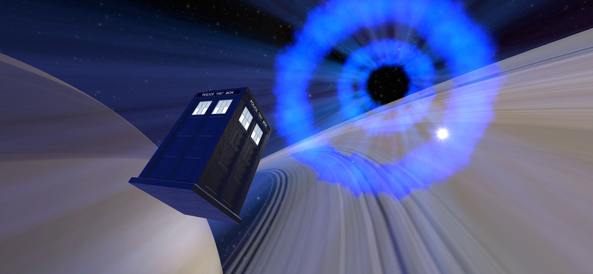

Have a Time Machine Inside Your Phone!

Step into the incredible world of time and space travel with the Blue Box Simulator, your very own Time And Space machine on your phone! Explore the universe and travel to any planet you desire at superluminal speeds!
With easy-to-use controls, simply tap the screen to access the console and let your adventure begin.
Get ready to experience manual flight like never before! Set the Handbrake to FLIGHT and pull down the Space Throttle to unleash maximum thrust, allowing you to fly around planets and explore the vast expanse of space.
Choose your destination by tapping on a planet icon or entering the coordinates in the menu, and your ship will take off on a thrilling journey through time and space. Adjust your cruise speed with the Space Throttle to take in the stunning sights and sounds of the universe.
Or, if you're feeling adventurous, dematerialize and travel through the Time Vortex by setting the Handbrake to VORTEX and pulling the Space Throttle down to 100. Change your destination while in the vortex and then pull up the Space Throttle to materialize in your new location!
We're always looking to improve the Blue Box Simulator, so please show your support by joining our Patreon or leaving a review with your suggestions for our next exciting update!
Notice: This app is not affiliated with the BBC in any way.
2012/2014 Interior screen animation made by BioDoctor900
https://www.youtube.com/user/Biodoctor900
Flappy Box Music made by DoctorOctoroc
https://www.youtube.com/watch?v=RvSk1rosmYY
Smartphone icon in Flappy Box made by [monkik] from www.flaticon.com
https://www.flaticon.com/authors/monkik
App Store
Play Store
Privacy Policy
Support or Contact
Do you want to contact me regarding one of my apps? Just e-mail me